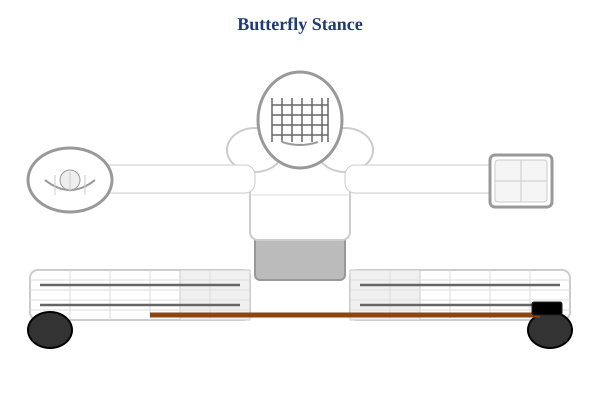
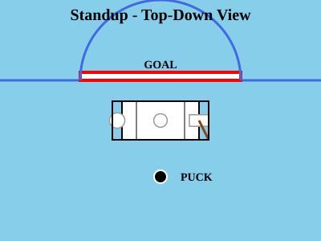
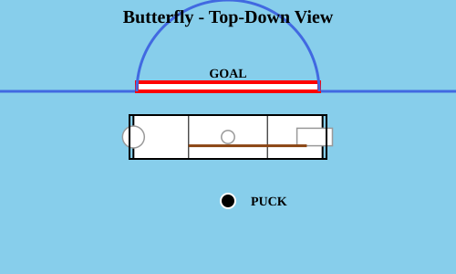

🥅 Goalie Visual Reference
Preview of goalie representations used in the training app
Standup Stance - Front View

Butterfly Stance - Front View

Standup Stance - Top-Down View

Butterfly Stance - Top-Down View

About These Visuals
Equipment Details: All equipment is white (pads, glove, blocker, helmet, jersey) with light grey pants. Realistic details include: segmented leg pads, knee stacks, pad straps, skate boots, glove webbing, blocker panels, and proper helmet cage. Brown stick with black blade.
Technical Note: These are standalone SVG files for visualization purposes. The actual training app uses HTML5 Canvas drawing commands (not SVG files) to render the goalies dynamically. The Canvas version will be updated to match this level of detail.
Standup vs Butterfly: Notice how the butterfly stance is wider (for better horizontal coverage) but shorter (lower to the ice), while standup is taller but narrower. In butterfly, pads are rotated flat, arms extended wide, and stick horizontal.